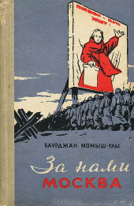
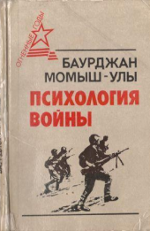

Книги Бауыржана Момышулы

«За нами Москва» является тематическим продолжением «Волоколамского шоссе» А. Бека.
Здесь нет ни вымышленных событий, ни вымышленных героев. Это записки человека, рассказывающего о том, что происходило или на его глазах, или с ним самим.
Автор не скрывает жизненной правды, порой горькой, тяжелой. Но это не заслоняет его светлой веры в советского человека, веры в победу, которая не покидала наших бойцов и офицеров в трудные минуты.
Книга “За нами Москва. Записки Офицера”
Здесь нет ни вымышленных событий, ни вымышленных героев. Это записки человека, рассказывающего о том, что происходило или на его глазах, или с ним самим.
Автор не скрывает жизненной правды, порой горькой, тяжелой. Но это не заслоняет его светлой веры в советского человека, веры в победу, которая не покидала наших бойцов и офицеров в трудные минуты.
Подробнее на livelib.ru:
https://www.livelib.ru/book/1000665309-za-nami-moskva-bauyrzhan-momyshulyКнига “Наша семья (сборник)”
Это книги о детстве писателя, о единой интернациональной семье советских воинов, о боевых буднях и подвигах легендарных панфиловцев, разгроме гитлеровских войск под Москвой, об освобождении наших городов и сел от немецко-фашистских оккупантов. Баурджан Момыш-улы был непосредственным участником описываемых им боев, командовал батальоном, полком, дивизией.
Ценность его произведений в их документальности, жизненной правде.
Подробнее на livelib.ru:
https://www.livelib.ru/book/1001259803-nasha-semya-sbornik-bauyrzhan-momyshuly

Писатели хорошо знают Момыш-улы как легендарного комбата, личной храбростью поднимавшего бойцов в атаку в битве под Москвой (об этом рассказывается в романе А. Бека «Волоколамское шоссе»), а так же как автора книг «За нами Москва» (1958), «Генерал Панфилов» (1963), «Наша семья» (1976), удостоенной Государственной премии Казахской ССР имени Абая.
В книгу вошли речи, лекции, выступления, Б. Момыш-улы перед учеными, писателями, бойцами и политработниками в 1943-1945 гг., некоторые письма, раскрывающего взгляды воина и педагога на психологию Великой Отечественной войны, на все пережитое.
Книга “Психология Войны”
В книгу вошли речи, лекции, выступления, Б. Момыш-улы перед учеными, писателями, бойцами и политработниками в 1943-1945 гг., некоторые письма, раскрывающего взгляды воина и педагога на психологию Великой Отечественной войны, на все пережитое.
Подробнее на livelib.ru:
https://www.livelib.ru/book/1001607098-psihologiya-vojny-baurdzhan-momyshulyКнига “Генерал Панфилов”
Подробнее на livelib.ru:
https://www.livelib.ru/book/1001541518-general-panfilov-bauyrzhan-momyshuly